聊聊人生第一台车：比亚迪唐！2017-2024，真实使用体验分享
一、优缺点明显的 第二代DM技术
比亚迪唐 2015 年款四驱旗舰型， 是一款中型 SUV：，插混车型，纯电续航是 80km，很多时候也被称为：唐 80。

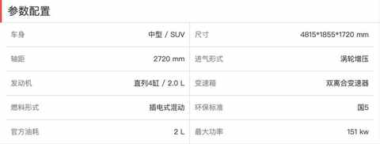

当时还采用 第二代DM技术的是大名鼎鼎的比亚迪秦，相信坐过这款车的肯定不在少数，在网约车大战中，这款车是绝对的主力车型。
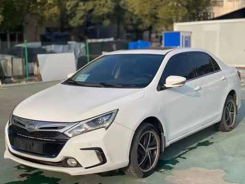
得益于 第二代DM技术强大的性能，唐在车重超过 2 吨的情况下，加速很快，超车时能很快拉开空间， 同时也是鲜有的把零百成绩放在车尾的车型。
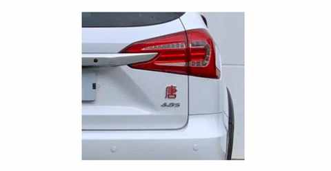
不过，硬币的另一面也同样令人印象深刻：油耗偏高、缺电时顿挫明显、操控性一般……
二、过命的交情
2022 年的国庆节当天，在高速上爆胎，真的是惊魂一刻。

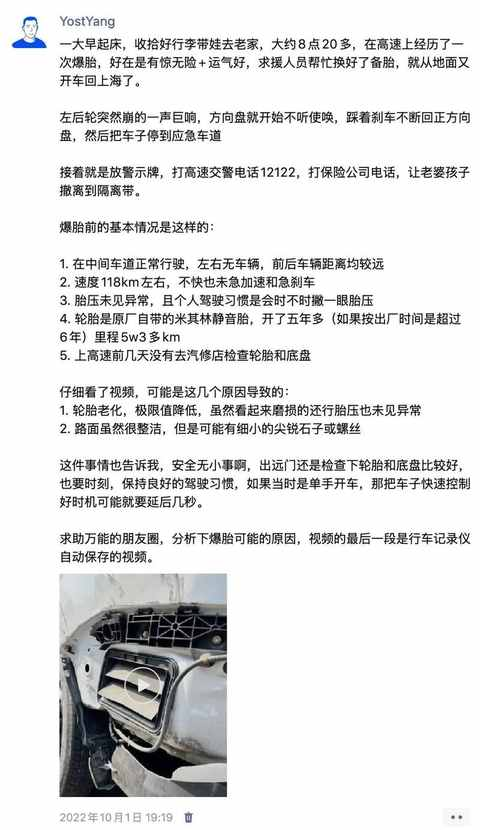
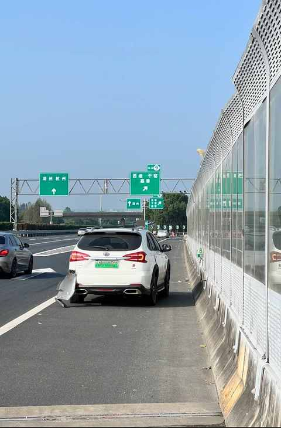
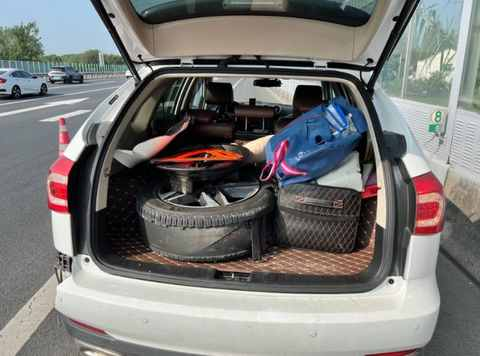
事后复盘来复盘去，四驱起到了关键的作用，让我能及时把车辆控制住。
路面未看见异物，爆胎最大的概率是轮胎到了使用年限，因为常识不足且疏于检查未能提前更换掉。
另外一个重要提醒：
用车的安全知识一定要自己多了解多学习，如果只是在保养或维修的时候询问工作人员，很可能得到的答案是错误的。
因为当年保养的时候我也问过工作人员关于轮胎的情况，他表示的轮胎磨损度尚可还能继续用一年多，被忽视的正是尤为关键的轮胎出厂时间。
三、合格的家用 SUV
空间是中型 SUV 的水准，搬家的时候起到了大作用。
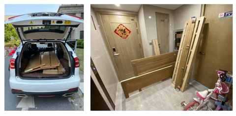
配置全面，在当时标配的很多功能在其他车上是选配或压根没有的功能：
- 无钥匙进入
- 全景影像
- 原地发电
- 对外放电
- 电动方向盘调节
- 液晶仪表盘
- 可开启天窗
- 定速巡航
- APP远程操控
- ……
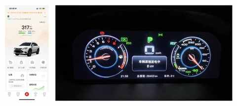
操控性尚可，虽没有那么灵活，但应付日常的情况完全够用。即使遇到路况不好的路段在车内也不会感觉到很颠簸。
四、偶有小毛病
2024 年的 8 月初，车子在高速上趴窝：电量耗完，发动机无法启动。
人生中第二次坐拖车，也是难得的体验。
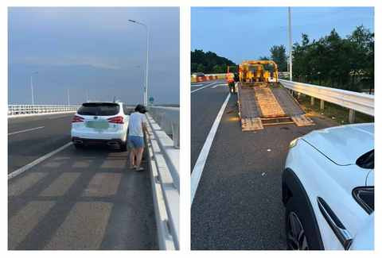
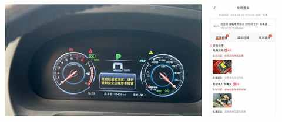
自此，种下了要换车的种子。
五、2017 年计划外的买车
直接原因是：在六院门口被出租车拒载！
2017 年2 月上旬，老婆产后出院的时候，大概率是目的地比较近，在医院门口被多个出租车拒载，甚至有一个出租车司机问了我目的地之后直接锁车把车开远，生怕我拉门上车。
现在想起来依然气不打一处来，至今都 8 年多了，那辆出租车的车牌号依然在相册里面。
后面改变策略，直接先上车，和司机师傅说明目的地，然后确定价格，最终达成的价格是 50 元，路程大概 2km。
如果当时有车，肯定不可能出现这种情况，最多堵车一些，围着医院多绕几圈，原计划是驾照拿到之后再看具体情况。
不过，自那天上午回到出租屋后，买车计划正式启动！
虽然当时驾照还在考，但除了试驾还有很多事情可以提前做准备，每天都会花不少时间在汽车之家上。
综合购车的各种因素：
- 配置：最好全面一点
- 新能源政策：送新能源牌照
- 空间大小：需足够一家三口用
- 预算：20-25w
仔细对比来对比去就只有一款车：比亚迪唐，在 3 月初拿到驾照之后火速去了一趟比亚迪的 4S 店，两个月后提车，即 2017 年的 5 月中旬。
六、基于需求变化的换车
随着孩子的成长，家庭用车需求的变化，最终在 2024 年的年底完成车辆的置换，新车并没有选择比亚迪的车型。
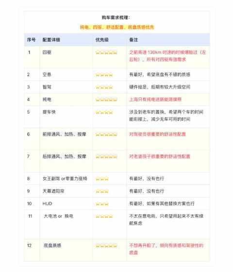
主要是外观和配置方面已经不适合自身需求，也是在试驾的过程中感知到其他新能源厂商的特色和特点。
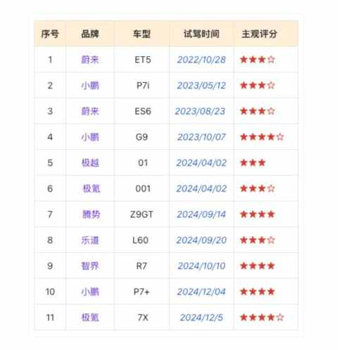
最终的选择是：极氪 7X。
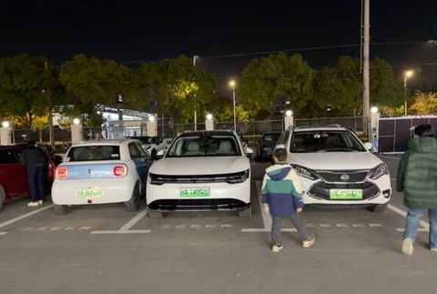